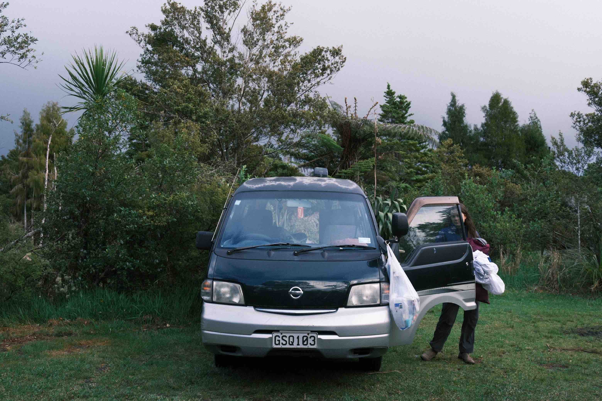
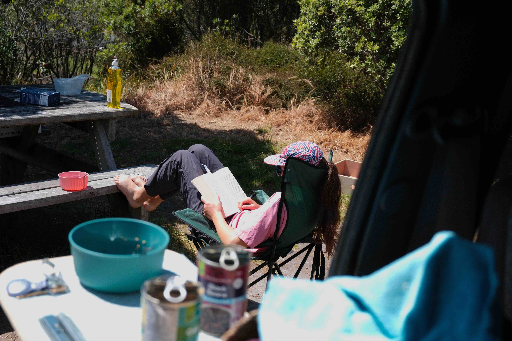
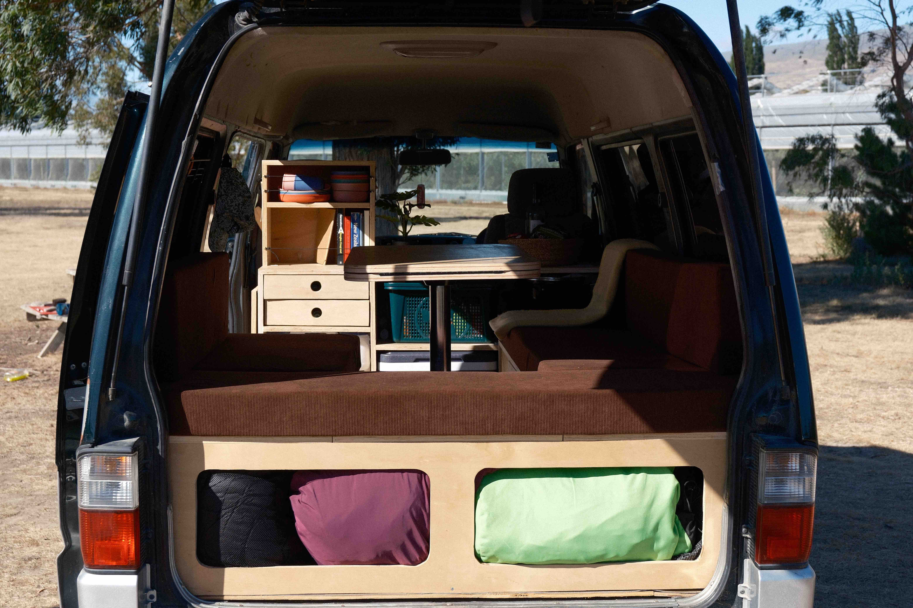
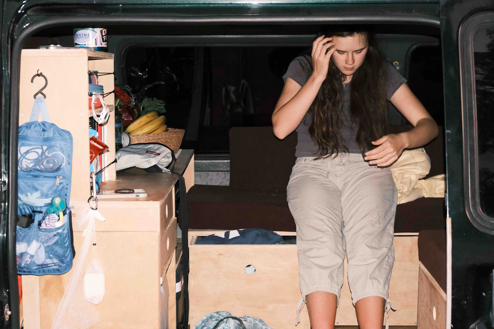

Ode to Walter Bongo
Me and Paisley's van was a great one. I will start from the very beginning when I first laid eyes on Walter Bongo.
Our first couple days in Auckland were scary. It felt like we were in way over our heads and it was kind of a scramble to find where to start. But once we got going it wasn't so bad. First on the to do list: buy a van. They are pretty cheap in NZ, lots and lots of people buy them, travel for a year, and resell them when they leave. So there were plenty of already built out ready to go vans. But I had bigger plans. I wanted to build it out ourselves. That way it could be exactly how we wanted it. Also there's a chance we could save some money doing it this way.
We found a mechanic selling a used 2007 Nissan Vanette. It had only ever been used as a work van, shuttling materials around Auckland. It was so cute. These vans are really small and the engine is under the seats, which puts you really close to the front of the vehicle. Your knees are the crumple zone.
The mechanics name was Vladimir and he was nice, he was originally from Russia. He gave use a good deal so we decided to go for it. It was so exciting driving off the lot. And guess what, we were driving on the LEFT side of the road. It was so nerve wracking in the beginning, but we got used to it.
How do you build out a van when you are essentially on vacation? That is what I was wondering. At first I thought we could just park behind Bunnings (Home Depot in NZ), but that was a silly idea. Paisley had a better one, she booked us an AirB&B with a garage.

Next problem, materials and tools. There's a great place in Auckland called ALOT, you pay a tiny fee and then you can rent any tool you could ever imagine. And our materials came from Bunnings. We were all set.
We pulled up to our AirB&B with a gutted van, three sheets of plywood and whole lot of tools sliding and clattering around in the back. We only had a week to build out our home for the next seven months. Every morning we would eat some Weet Bix, and then head out to the garage. We'd work for the whole day, cutting and nailing stuff together. As the day progressed we would collect a list of things we needed to pick up from the store. More plywood, more screws and such. By the evening we were done for the day, we would pack up the van as best we could, and go shopping. All while the construction supplies were sliding around in the back.
I used SketchUp to plan the interior design. We opted for a kitchen in the front and a wrap around couch and dining area in the back. I also designed a table that could be taken apart and lowered into the bed. The system to transform it from couch to bed was totally original and I'm very proud of it.
It was fun, but these were hard times, it was stressful trying to get everything done on time, and we argued about how it should be done. I was right about some things, she was right about other things. It was a team effort, and we learned to compromise.

After a week, it was time to take it for a test run. We didn't have cushions yet, and most of the kitchen was unbuilt. So it was pretty rough around the edges, but our time at the AirB&B was over. It was only mostly done though, and so we had to pack up our tools with us. It was a horrible mess in that little van. But we were very excited, then for the first time, we hit the road.
If I haven't mentioned this yet, our van was named Walter Bongo. I think by this time we hadn't named it yet, but anyways here is the story. I like Breaking Bad so Walter. And the original maker of the Nissan Vanette was Mazda. They were called Mazda Bongos. We thought that was a funny name so we dubbed it, Walter Bongo.
Anyways back to the story, our first EVER road trip with Walter Bongo we went to one of my favorite campsites. Uretiti. There's so much wide open grass space to park and run around in, and it's right on the beach. Additionally it was early in the summer so less crowds.

It was nice to be out of the city. Paisley read a lot and I engaged in the battle of the drawers. The bane of my existence. I am a decent woodworking but had never done drawers before. They wouldn't have been so hard but I didn't plan to have drawers from the start, and so the wood wasn't parallel and it was a big mess. I have this funny clip of me launching a chair into the air because I was so frustrated with these little drawers. I mean they have to be EXACT down to the millimeter. And so it was frustrating and throwing a chair into the air is totally warranted.
Uretiti is also where we spent halloween. What a grand place. It was so warm and green, I set up the hammock. We cooked tacos on our new camp stove. What a peaceful place. We slept on the plywood though because our cushions weren't ready yet.
After I had defeated the drawers and Paisley had exhausted her book supply, we headed back to Auckland. There was a great surprise waiting for us, our CUSHIONS were ready to pick up. We also finished up the kitchen, I added some shelves very last second. The cushions were amazing.
That is essentially the entire story for finding and building out our van. One last thing is that over Christmas while we were home I sewed the covers for the cushions. I picked out brown corduroy and I think it was a great choice. It kind of made it look like a grandpa van but that was Walter's style.

Now I'll talk a little about our design. It was such a great idea to create a real living area. Our van was no bigger then either of our friends but it felt much nicer because we had a livable area. Our design forced us to convert it every morning, so there was no chance to be lazy and just leave the bed out everyday. We had a couple dinners back there with our friends of six or seven people. Very impressive.
I definitely would not have added a fridge or an electrical system. Totally unnecessary and really expensive. Instead we used two cheap external batteries. That was plenty. And the cooler was fine. Towards the end we stopped using it as a cooler because it didn't last too long and it was easier to just buy food that does not need to be cold.
If I were to do it again I would have added a toilet. Not to use, but because in New Zealand if you have a toilet and meet a few other requirements, you can get this certification that basically allows you to camp anywhere you want. Second time I would have done that.
Saying Goodbye to Walter

We traveled like that for six or seven months, going up and down mountains, all along the coast. But once we reached Christchurch our journey was over. We spent a week selling it on Facebook but the going was tough. This was also the time of the oil crisis and subsequently nobody felt like investing in a van. At the end of the day we sold it to a goofy guy who had kind of become our friend. He handed us a wad of cash and took the keys. Then next day he drove us to the airport. Thanks Sunpreet.